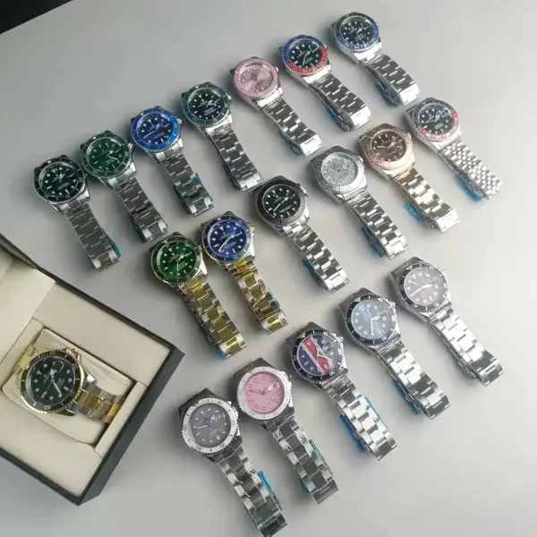

Updated CSSBuy Spreadsheet 2026
CSSBUY SPREADSHEET 2026
CSSBUY SPREADSHEET 2026
W2C FINDS, QC
& SHIPPING.
Curated W2C finds, QC photo checks, shipping planning and independent buyer guides.
Independent CSSBuy buyer guide · Updated September 2026
3–5Free QC photos currently advertised
90Days of free storage currently advertised
150+International routes currently advertised
NikeAdidasBalenciagaSupremeStone IslandArc'teryxNew BalanceLouis VuittonDiorStussyBAPECarharttThe North FaceGallery DeptRalph LaurenCasablancaASICSJordanLoeweMaison Margiela
NikeAdidasBalenciagaSupremeStone IslandArc'teryxNew BalanceLouis VuittonDiorStussyBAPECarharttThe North FaceGallery DeptRalph LaurenCasablancaASICSJordanLoeweMaison Margiela
CSSBuy Spreadsheet Categories
Browse CSSBuy Finds by Product Category
Featured CSSBuy Finds
10 Curated Products from the CSSBuy Spreadsheet
Search intent architecture
W2C answers the product. QC answers the decision.
W2C
Make the buying destination easy to understand.
Product-first landing blocks01
Clear destination buttons02
Related finds under each card03
QC
Help buyers inspect the right details.
Shoes: shape, heel, sole05
Clothing: print and measurements04
Bags: hardware and corners04
Plan the parcel with facts, not fake flat rates.
WeightActual and volumetric weight both matter.
RouteCountry and product attribute affect available lines.
QCCheck before you lock in international shipping.
Parcel planning assistant
Packaging focusRemove excess boxes
Compare routes byChargeable weight
Before submitRehearsal / measurement
CSSBuy Buyer Guides
Practical CSSBuy Guides for Ordering, QC and Shipping.
USA Shipping · NewCompare parcel inputs, route restrictions, customs readiness and delivery handoffs for the United States.
CSSBuy Shipping to USA 2026
Independent Review · NewEvaluate whether CSSBuy fits your order using workflow evidence, fees, QC, shipping and risk controls.
CSSBuy Review 2026: Is It Legit?
Spreadsheet Guide · NewUse the spreadsheet as a discovery and verification workflow, not as an automatic buying recommendation.
How to Use the CSSBuy Spreadsheet
Reverse purchasing FAQ
Compact answers in the same visual language.
The FAQ keeps only one answer open at a time and follows the hero’s darker, glowing card treatment for a more consistent final section.
No. CSSBuyVIP is an independent buyer-guide and product-discovery website. It is not operated by CSSBuy, does not manage CSSBuy accounts, and cannot change warehouse, payment, shipping, return, customs, or customer-service decisions. The site is designed to organize product categories, W2C destinations, QC checklists, shipping concepts, and long-form buyer guides in a clearer format. Before paying for an order or submitting a parcel, confirm the current price, product status, available shipping lines, service options, and account rules directly inside CSSBuy.
W2C means “Where to Cop,” or where a product can be purchased. A useful W2C page should do more than display a single outbound link: it should identify the product category, show a clear image, state when the destination was last checked, explain the approximate price or variation count, and connect the product to an appropriate QC checklist. Product links can change, listings can disappear, and sellers can replace variations, so buyers should reconfirm the seller page, selected size, color, quantity, domestic delivery charge, and product notes before payment.
A useful QC page should turn warehouse photographs into a buying decision. Start by confirming that the received item matches the ordered color, size, quantity, model, and visible design. Then inspect category-specific risk areas: shoe symmetry, toe shape, heel alignment and insole length; clothing measurements, print position, seams and labels; bag corners, zippers, hardware and strap attachment points. If the standard images do not answer the decision, request one precise extra angle or measurement rather than a vague request for more photos. CSSBuy also tells customers to review QC photos carefully before shipment and report problems promptly.
No. International shipping is not a universal fixed price per kilogram. CSSBuy’s calculator asks for destination, weight, parcel dimensions and commodity attributes such as ordinary goods, electric items, liquids, shoes, bags, cosmetics, batteries or magnetic products. The amount paid when a parcel is submitted is an international-shipping deposit based on estimated weight, the selected route and destination. The final charge is calculated after the shipping company verifies the packed parcel’s size and weight. If the final amount differs from the deposit, CSSBuy states that the difference is returned to the account after shipment.
CSSBuy currently advertises 3–5 free QC photos per item on its homepage. These standard photographs are intended to help users confirm the basic appearance of an item after it reaches the warehouse. They should not be treated as a guarantee of material quality, authenticity, exact sizing or flawless construction. Review every image before international shipping, compare it with the order details, and request a targeted measurement or close-up when a critical area is missing. Extra services and their prices can change, so any additional-photo charge should be confirmed inside the order or service interface before requesting it.
Keeping product previews on the external site gives visitors useful information before they leave the page. A good card can show the product image, category, price reference, variation count, QC action and the matching main-site destination. This creates a clearer path from discovery to verification to purchase, instead of sending every visitor away through an unexplained button. It also gives search engines indexable category and product context. The preview must remain honest: prices and availability are references, product pages can change, and the final listing should always be checked on the main site before ordering.
Product listings, seller variations, account services and shipping routes can change without notice. Recheck a product destination before adding it to the cart, verify the selected size and color before payment, and confirm available shipping lines when the parcel is ready. Content pages should display a last-checked date and be reviewed whenever CSSBuy changes its calculator, warehouse options, service pricing or shipping restrictions.
Yes. The layout can be expanded into a full SEO structure with permanent category pages, product-detail pages, W2C landing pages, QC guides, country-specific shipping pages and an archive containing every buyer guide. Each page should have a distinct search purpose rather than repeating the homepage. Maintenance is equally important: product destinations should be rechecked, outdated prices should be labeled, new articles should enter the homepage and archive, and old guides should remain accessible. CSSBuy’s warehouse policy also matters for content planning: items currently receive 90 days of free storage from the in-warehouse status, and users remain responsible for shipping on time.